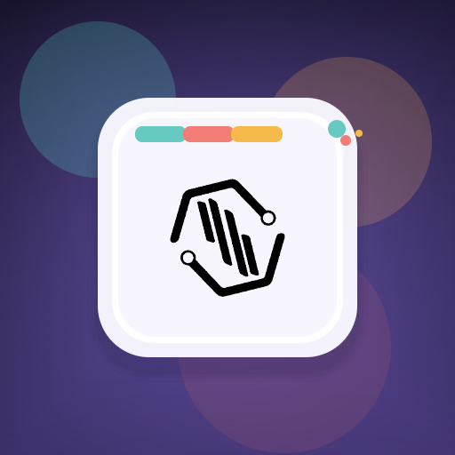
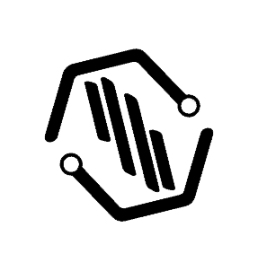
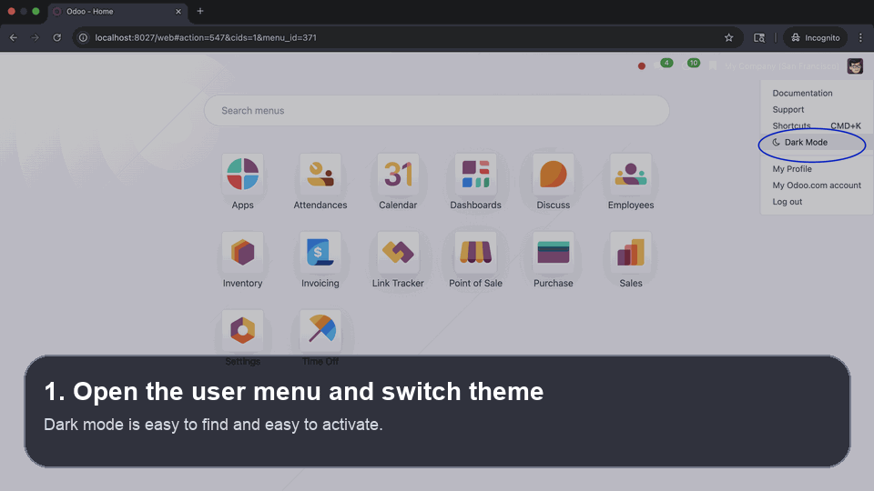

Dark Mode Icon Placement
The theme switch is placed where users can find it quickly from the user menu without changing their normal workflow.


Backend Theme refreshes the Odoo backend with a clearer main menu, cleaner navigation, dark mode support, bookmark shortcuts, and better everyday readability. It is designed for teams that want a modern workspace without making Odoo harder to use.
Credits: NexOrionis Techsphere
The goal is not only to make the backend look darker. The goal is to make it easier to read, easier to search, and easier to understand during long working sessions.
Some backend themes make dark mode look stylish but leave important text too dim to read. This module focuses on keeping key labels and actions visible so users do not get lost.

This module is built around clarity. It helps users move through the backend more comfortably, especially when they rely on dark mode for long working hours.
Users can reach installed applications more quickly, search more easily, and keep a smoother flow between tasks.
The theme is meant to stay understandable in dark mode, with better contrast on key texts, actions, and dashboard content.
Frequently used menus and links can be saved for faster access, which reduces repeated navigation during daily operations.
The visual direction stays cleaner across dashboards, onboarding cards, kanban screens, and menu flows.
Dark mode should help users feel comfortable, not force them to guess what a title says. This module pays attention to the places where text often becomes hard to see, such as dashboard cards, POS configuration blocks, dropdown actions, and product names.
This animated preview shows the dark mode entry point, the workspace after switching theme, and how navigation remains understandable during normal use.

The GIF makes it easier for users to understand how the feature is used in real screens: open the user menu, switch to dark mode, review the result, and continue using search normally.
Users can quickly see where the theme switch is placed, so there is less confusion about how to activate dark mode.
The preview makes the dark layout easier to judge before installation or purchase decisions.
It communicates that the module is not only decorative. It also helps keep important content visible.
Every screenshot below shows a different part of the workflow so users can understand how the theme looks, where dark mode is enabled, and how search behaves in both light mode and dark mode.
The theme switch is placed where users can find it quickly from the user menu without changing their normal workflow.
This view helps users understand the immediate result after the theme is changed from the menu.

A wider look at the backend in dark mode, useful for showing the general atmosphere and the improved reading comfort.

The module still keeps a clean and familiar search area in light mode for users who prefer the default bright workspace.

This screenshot explains how users can search and open menus more directly instead of browsing through many navigation levels.

The module icon and company identity are included so users can easily recognize the package in app listings and support materials.